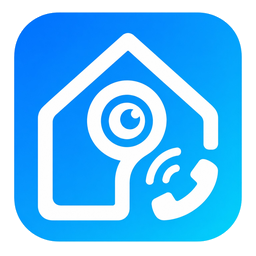

Reolink ↔ SIP Zwei-Wege-Audio + FRITZ!Fon-Livebilder
{{.APIHostname}}{{.APIToken}}Die Integration erzeugt die API-Adresse automatisch. Token vertraulich behandeln; es berechtigt zu Testanruf und Auflegen.
Tür-Livebild (bestehender Link)
In der FRITZ!Box bei Live-Bild http:// auswählen und diesen Wert eintragen:
{{.LiveImageAddress}}Status: {{.LiveImageDiscovery.StatusText}}
Letzter Versuch: {{time .LiveImageDiscovery.LastAttempt}} · letzter Erfolg: {{time .LiveImageDiscovery.LastSuccess}}
Der NVR wird beim Start und danach alle fünf Minuten geprüft. Bei einem Fehler bleiben der letzte erkannte Katalog und alle Links erhalten.
{{end}} {{if .LiveImageChannels}}Der empfohlene Kamera-Link folgt derselben Kamera auch bei einem späteren Kanalwechsel. Der nummerierte Link aus 1.4 bleibt zusätzlich verfügbar.
{{range .LiveImageChannels}}Kanal {{.Number}}{{if .Name}} – {{.Name}}{{end}}{{if .Primary}} (Türkanal){{end}}
Kamerastatus: {{.StatusText}} · Bildabruf: {{.CaptureText}}
{{if .Address}}Stabiler Kamera-Link (empfohlen)
{{.Address}}Für diesen Kanal meldet das Gerät keine Kamera-UID; daher ist nur der nummerierte Link verfügbar.
{{end}}Nummerierter Kanal-Link (kompatibel mit 1.4)
{{.ChannelAddress}}Alle geheimen Adressen enden FRITZ!Box-kompatibel auf .jpg. Reolink-Zugangsdaten und Kamera-UIDs werden nicht an die FRITZ!Box übergeben.
In den App-Optionen unter „FRITZ!Fon-Livebild“ deaktiviert.
{{end}}| Status | {{.State}} |
| Tür-SIP registriert | {{if .SIPRegistered}}ja{{else}}nein{{end}} |
| Mobilruf-SIP registriert | {{if .ParallelSIPRegistered}}ja{{else}}nein{{end}} |
| Home Assistant | {{if .HAConnected}}verbunden{{else}}nicht verbunden{{end}} |
| Konfigurierter Reolink-Modus | {{.ConfiguredReolinkMode}} |
| Aktiver Reolink-Modus | {{if .ActiveReolinkMode}}{{.ActiveReolinkMode}}{{else}}noch nicht ermittelt{{end}} |
| Medienweg | {{if .MediaProfile}}{{.MediaProfile}}{{else}}noch nicht ermittelt{{end}} |
| WebRTC AEC | {{if .EchoCancellationEnabled}}an, Go-Tracking aus (AEC3 intern), Hochpass {{if .WebRTCHighPassFilterEnabled}}an{{else}}aus{{end}}, Rauschfilter {{if .WebRTCNoiseSuppressionEnabled}}moderate{{else}}aus{{end}}{{else}}aus{{end}} |
| FRITZ!Fon-Livebilder | {{if .FritzFonLiveImageEnabled}}aktiv{{else}}aus{{end}} |
| Automatische Kalibrierung | {{.CalibrationStatus}}{{if .CalibrationDetails}} – {{.CalibrationDetails}}{{end}} |
| Kalibrierte Latenz | {{if .EchoCancellationEnabled}}{{.CalibratedDelayMS}} ms{{else}}–{{end}} |
| Aktuelle Latenz | {{if .EchoCancellationEnabled}}{{.CurrentDelayMS}} ms{{else}}–{{end}} |
| Live-Delay-Tracking | {{if .EchoCancellationEnabled}}aus; kalibrierter Go-Coarse-Delay bleibt während des Calls fest{{else}}–{{end}} |
| Letzte Kalibrierung | {{time .LastCalibration}} |
| Aktiver AEC-Pfad | {{.ActiveEchoCancellation}} |
| Aktiver Codec | {{.ActiveCodec}} |
| Aktiver Empfang | {{.ActiveReceive}}{{if .ReceiveDetails}} – {{.ReceiveDetails}}{{end}} |
| Aktiver Rückkanal | {{.ActiveTalkback}}{{if .TalkbackDetails}} – {{.TalkbackDetails}}{{end}} |
| Aktuelle Route | {{if .CurrentRouteName}}{{.CurrentRouteName}} ({{.CurrentRouteID}}){{else}}–{{end}} |
| Letzte Route | {{if .LastRouteName}}{{.LastRouteName}} ({{.LastRouteID}}){{else}}–{{end}} |
| Aktuelle Anrufrichtung | {{if .CurrentCallDirection}}{{.CurrentCallDirection}}{{else}}–{{end}} |
| Aktuell anrufende Nummer | {{if .CurrentCallerNumber}}{{.CurrentCallerNumber}}{{else}}–{{end}} |
| Letzte anrufende Nummer | {{if .LastCallerNumber}}{{.LastCallerNumber}}{{else}}–{{end}} |
| Letzte Anrufrichtung | {{if .LastCallDirection}}{{.LastCallDirection}}{{else}}–{{end}} |
| Letztes Klingeln | {{time .LastVisitorEvent}} |
| Letzter Tür-SIP-Registrierungsfehler | {{.LastRegistrationErr}} |
| Letzter Mobilruf-SIP-Registrierungsfehler | {{.LastParallelRegistrationErr}} |
| Letzter Fehler | {{.LastError}} |
| Start | {{time .StartedAt}} |
| Version | {{.Version}} |
Die Seite aktualisiert sich automatisch.